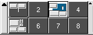

1.2 The Workspaces
-
KDE supports more than one workspace in which one can put windows.
-
You can switch to a different workspace by pressing its number in
the workspaces display at the bottom panel.

-
When you switch to a different workspace, and return to the original,
you will find all the windows that were opened in the original.